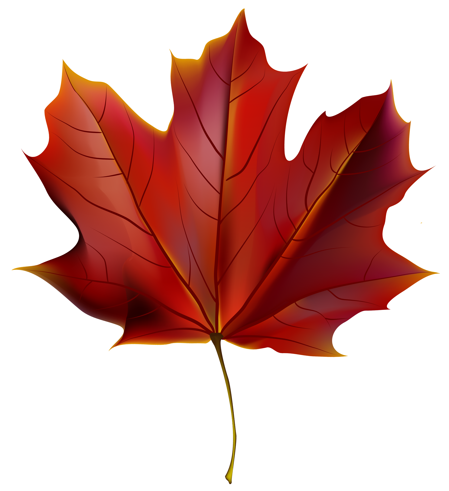

Pagina Precedentă

Pagina Următoare
Toamna este unul din cele patru anotimpuri ale climei temperate. Este anotimpul care face legătura între vară şi iarnă. În emisfera nordică toamna începe în jurul lunilor august/septembrie pe când în emisfera sudică începutul toamnei este considerat în jurul lunii martie. În această perioadă frunzele foioaselor încep să cadă. Acestea se îngălbenesc, treptat capătă o culoare roşiatică sau brună după care cad. De aceea, în America de Nord toamna este numită şi fall, în traducere cădere. Este anotimpul în care zilele devin din ce în ce mai scurte şi mai răcoroase, nopţile devin din ce în ce mai lungi şi mai friguroase iar în unele ţări precipitaţiile tind să crească treptat. Toamna poate avea atât de multe înţelesuri diferite. E anotimpul recoltei şi al abundenţei, timpul în care ne facem proviziile pentru iarna care va veni. E un moment de sărbătoare şi reuniune, un eveniment unic de imagini, sunete şi mirosuri. Toamna e anotimpul ploilor, al copacilor care plâng în ritmul căderii frunzelor, al norilor şi păsărilor călătoare. Toamna este anotimpul îndrăgostiţilor şi al romanticilor. E anotimpul poeziilor rostite în şoaptă, al versurilor tulburătoare, al iubirilor infrigurate şi al sufletelor pereche. E anotimpul emoţiilor ... Dar mai presus de toate, toamna înseamnă frunze colorate: un spectru de nuanţe între verdele strălucitor al verii şi tonul plictisitor al iernii. Roşu aprins , maro, portocaliu rumen, portocaliu pur, galben, galben moale şi galben luminos, ruginiu. Arţari roşii, mesteacăni galbeni, paltini stacojii, nuci arămii. Un peisaj pestriţ de frunze şi culori aflate în tranziţie. Fiecare copac cu garderoba proprie de toamnă, sălcii dansând în vânt, conifere tronând elegant. E ca o vrajă a toamnei care scoate din joben lumina din frunze şi cele mai minunate nuanţe. E atât de încântător încât aproape poţi gusta culoarea. Şi nopţile reci, cu aerul lor special, plin de miresme, de must şi de viaţă, te îndeamnă la meloncolie şi visare. Un aer de epocă, aparte, diferit prin simbol şi trăire